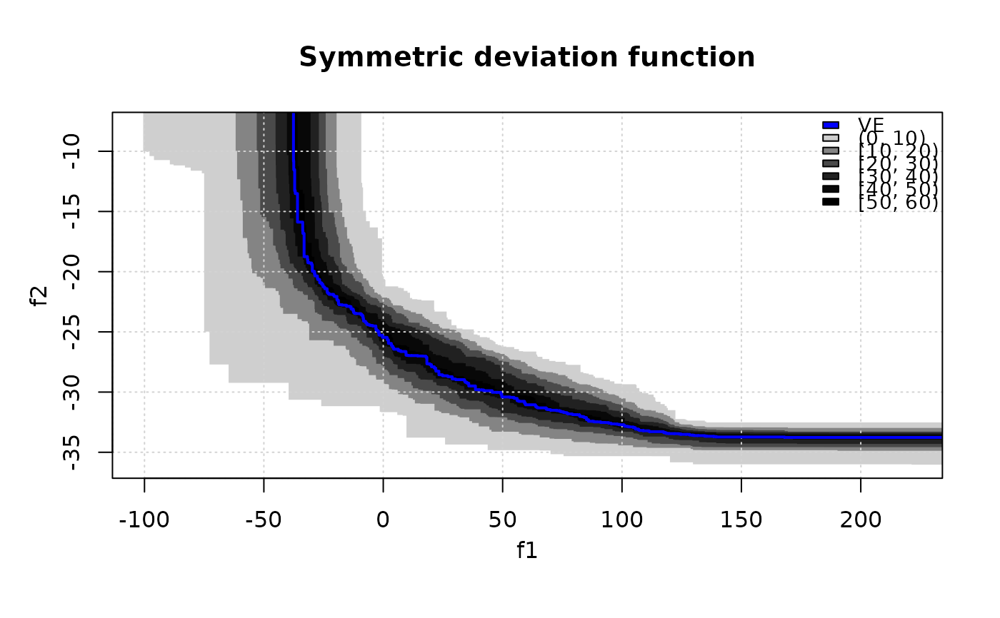

Compute Vorob'ev threshold, expectation and deviation. Also, displaying the symmetric deviation function is possible. The symmetric deviation function is the probability for a given target in the objective space to belong to the symmetric difference between the Vorob'ev expectation and a realization of the (random) attained set.
vorobT(x, reference) vorobDev(x, VE, reference) symDifPlot(x, VE, threshold, nlevels = 11, ve.col = "blue", xlim = NULL, ylim = NULL, legend.pos = "topright", main = "Symmetric deviation function", col.fun = function(n) gray(seq(0, 0.9, length.out = n)^2))
Arguments
| x | Either a matrix of data values, or a data frame, or a list of data frames of exactly three columns. The third column gives the set (run, sample, ...) identifier. |
|---|---|
| reference | ( |
| VE, threshold | Vorob'ev expectation and threshold, e.g., as returned
by |
| nlevels | number of levels in which is divided the range of the symmetric deviation. |
| ve.col | plotting parameters for the Vorob'ev expectation. |
| xlim, ylim, main | Graphical parameters, see
|
| legend.pos | the position of the legend, see
|
| col.fun | function that creates a vector of |
Value
vorobT returns a list with elements threshold,
VE, and avg_hyp (average hypervolume)
vorobDev returns the Vorob'ev deviation.
References
M. Binois, D. Ginsbourger and O. Roustant (2015), Quantifying Uncertainty on Pareto Fronts with Gaussian process conditional simulations, European Journal of Operational Research, 243(2), 386-394.
C. Chevalier (2013), Fast uncertainty reduction strategies relying on Gaussian process models, University of Bern, PhD thesis.
I. Molchanov (2005), Theory of random sets, Springer.
Examples
#> [1] 44.14062## Display Vorob'ev expectation and attainment function # First style eafplot(CPFs[,1:2], sets = CPFs[,3], percentiles = c(0, 25, 50, 75, 100, res$threshold), main = substitute(paste("Empirical attainment function, ",beta,"* = ", a, "%"), list(a = formatC(res$threshold, digits = 2, format = "f"))))# Second style eafplot(CPFs[,1:2], sets = CPFs[,3], percentiles = c(0, 20, 40, 60, 80, 100), col = gray(seq(0.8, 0.1, length.out = 6)^0.5), type = "area", legend.pos = "bottomleft", extra.points = res$VE, extra.col = "cyan", extra.legend = "VE", extra.lty = "solid", extra.pch = NA, extra.lwd = 2, main = substitute(paste("Empirical attainment function, ",beta,"* = ", a, "%"), list(a = formatC(res$threshold, digits = 2, format = "f"))))#> [1] 3017.13# Now display the symmetric deviation function. symDifPlot(CPFs, res$VE, res$threshold, nlevels = 11)# Levels are adjusted automatically if too large. symDifPlot(CPFs, res$VE, res$threshold, nlevels = 200, legend.pos = "none")# Use a different palette. symDifPlot(CPFs, res$VE, res$threshold, nlevels = 11, col.fun = heat.colors)